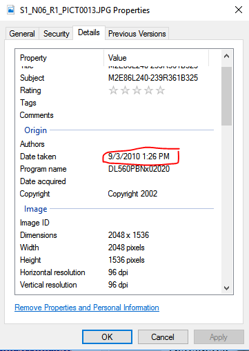
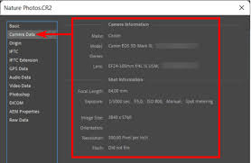
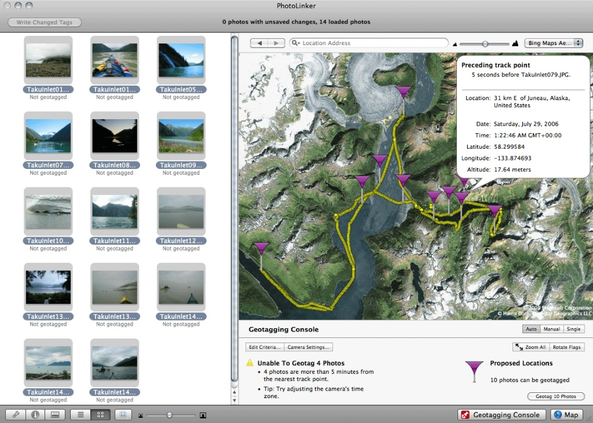

In the age of viral content, not everything we see online is what it appears to be. Videos and images can be edited, manipulated, or taken out of context. One of the most powerful ways to verify digital media is by analyzing its metadata—hidden information embedded within files that reveals important details about their origin.
Instead of relying only on what is visible, metadata allows investigators to look behind the surface. It provides clues such as when a file was created, where it may have been captured, and what device was used. Understanding metadata is essential for detecting misleading or manipulated media.
What is Metadata?
Metadata is often described as “data about data.” In images and videos, it refers to hidden information stored within the file. This information is automatically generated by devices such as smartphones, cameras, or editing software.
For example, when a photo is taken using a mobile phone, the file may include details such as the date and time, location (GPS coordinates), camera model, and even camera settings. This information can later be used to verify whether the media is authentic or misleading.
Metadata is not visible in the image or video itself—but it can reveal the truth behind it.
Why Metadata Matters
Metadata plays a crucial role in verifying digital content. While a video may look convincing, its metadata can reveal inconsistencies that expose manipulation or false claims.
For instance, a viral video claiming to be “recent” may actually have metadata showing it was created years earlier. Similarly, location data can confirm whether the content was captured where it claims to be.
- Helps verify when the media was created
- Can reveal the original location of the file
- Shows what device or software was used
- Can expose reused or recycled content
- Supports fact-checking and investigation
Key Metadata to Check
1. Date and Time Information

The date and time stored in metadata can reveal when a file was originally created or modified. This is especially useful when verifying viral content that claims to be recent. If the metadata shows an earlier date, it may indicate that the content is being reused or misrepresented.
- Shows when the file was created or last edited
- Can expose outdated or recycled media
- Helps verify timelines of events
2. Device and Software Information

Metadata can also indicate what device or software was used to create or modify a file. For example, if a video claims to be raw footage but shows editing software in its metadata, this may suggest that the content has been altered.
- Identifies camera or smartphone used
- May reveal editing software like Photoshop or video editors
- Helps detect whether content has been modified
3. Location (GPS Data)

Some files contain GPS coordinates that indicate where the media was captured. This can be used to verify whether the location matches the claim made in the post. However, not all files include location data, and it can also be removed or altered.
- Shows where the media was captured
- Can confirm or contradict location claims
- May be missing or intentionally removed
Tools for Metadata Analysis
There are several tools available that allow users to view and analyze metadata from images and videos. These tools help uncover hidden information that is not visible to the naked eye.
- ExifTool – advanced tool for detailed metadata analysis
- Jeffrey’s Image Metadata Viewer – easy-to-use online viewer
- FotoForensics – helps detect manipulation and hidden edits
- MediaInfo – useful for analyzing video file metadata
Limitations and Risks
While metadata is a powerful tool, it is not always reliable. Metadata can be edited, removed, or completely missing, especially when files are uploaded to social media platforms.
Because of this, metadata should not be used alone. It must be combined with other verification methods such as reverse image search, source checking, and visual analysis.
- Metadata can be altered or faked
- Some platforms remove metadata upon upload
- Not all files contain complete metadata
- Should always be used with other verification methods
What We've Learned
Metadata analysis is a powerful method for verifying digital media by revealing hidden information about a file’s origin, creation, and modification. By examining details such as date, device, and location, users can identify inconsistencies that may indicate misleading or manipulated content.
However, metadata is not always complete or reliable. It should be used alongside other verification techniques to ensure accurate conclusions. In a digital world filled with viral content, understanding metadata helps users move from passive viewing to active investigation.
Always look beyond what you see. Metadata can reveal details that the content itself tries to hide.